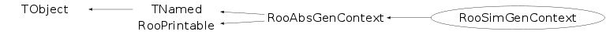

class RooSimGenContext: public RooAbsGenContext
RooSimGenContext is an efficient implementation of the generator context specific for RooSimultaneous PDFs when generating more than one of the component pdfs.
Function Members (Methods)
public:
| RooSimGenContext(const RooSimultaneous& model, const RooArgSet& vars, const RooDataSet* prototype = 0, const RooArgSet* auxProto = 0, Bool_t _verbose = kFALSE) | |
| virtual | ~RooSimGenContext() |
| void | TObject::AbstractMethod(const char* method) const |
| virtual void | TObject::AppendPad(Option_t* option = "") |
| virtual void | attach(const RooArgSet& params) |
| virtual void | TObject::Browse(TBrowser* b) |
| static TClass* | Class() |
| virtual const char* | TObject::ClassName() const |
| virtual void | TNamed::Clear(Option_t* option = "") |
| virtual TObject* | TNamed::Clone(const char* newname = "") const |
| virtual Int_t | TNamed::Compare(const TObject* obj) const |
| virtual void | TNamed::Copy(TObject& named) const |
| virtual Int_t | RooAbsGenContext::defaultPrintContents(Option_t* opt) const |
| static ostream& | RooPrintable::defaultPrintStream(ostream* os = 0) |
| virtual RooPrintable::StyleOption | RooAbsGenContext::defaultPrintStyle(Option_t* opt) const |
| virtual void | TObject::Delete(Option_t* option = "")MENU |
| virtual Int_t | TObject::DistancetoPrimitive(Int_t px, Int_t py) |
| virtual void | TObject::Draw(Option_t* option = "") |
| virtual void | TObject::DrawClass() constMENU |
| virtual TObject* | TObject::DrawClone(Option_t* option = "") constMENU |
| virtual void | TObject::Dump() constMENU |
| virtual void | TObject::Error(const char* method, const char* msgfmt) const |
| virtual void | TObject::Execute(const char* method, const char* params, Int_t* error = 0) |
| virtual void | TObject::Execute(TMethod* method, TObjArray* params, Int_t* error = 0) |
| virtual void | TObject::ExecuteEvent(Int_t event, Int_t px, Int_t py) |
| virtual void | TObject::Fatal(const char* method, const char* msgfmt) const |
| virtual void | TNamed::FillBuffer(char*& buffer) |
| virtual TObject* | TObject::FindObject(const char* name) const |
| virtual TObject* | TObject::FindObject(const TObject* obj) const |
| RooDataSet* | RooAbsGenContext::generate(Int_t nEvents = 0, Bool_t skipInit = kFALSE) |
| virtual Option_t* | TObject::GetDrawOption() const |
| static Long_t | TObject::GetDtorOnly() |
| virtual const char* | TObject::GetIconName() const |
| virtual const char* | TNamed::GetName() const |
| virtual char* | TObject::GetObjectInfo(Int_t px, Int_t py) const |
| static Bool_t | TObject::GetObjectStat() |
| virtual Option_t* | TObject::GetOption() const |
| virtual const char* | TNamed::GetTitle() const |
| virtual UInt_t | TObject::GetUniqueID() const |
| virtual Bool_t | TObject::HandleTimer(TTimer* timer) |
| virtual ULong_t | TNamed::Hash() const |
| virtual void | TObject::Info(const char* method, const char* msgfmt) const |
| virtual Bool_t | TObject::InheritsFrom(const char* classname) const |
| virtual Bool_t | TObject::InheritsFrom(const TClass* cl) const |
| virtual void | TObject::Inspect() constMENU |
| void | TObject::InvertBit(UInt_t f) |
| virtual TClass* | IsA() const |
| virtual Bool_t | TObject::IsEqual(const TObject* obj) const |
| virtual Bool_t | TObject::IsFolder() const |
| Bool_t | TObject::IsOnHeap() const |
| virtual Bool_t | TNamed::IsSortable() const |
| Bool_t | RooAbsGenContext::isValid() const |
| Bool_t | RooAbsGenContext::isVerbose() const |
| Bool_t | TObject::IsZombie() const |
| virtual void | TNamed::ls(Option_t* option = "") const |
| void | TObject::MayNotUse(const char* method) const |
| static void | RooPrintable::nameFieldLength(Int_t newLen) |
| virtual Bool_t | TObject::Notify() |
| void | TObject::Obsolete(const char* method, const char* asOfVers, const char* removedFromVers) const |
| static void | TObject::operator delete(void* ptr) |
| static void | TObject::operator delete(void* ptr, void* vp) |
| static void | TObject::operator delete[](void* ptr) |
| static void | TObject::operator delete[](void* ptr, void* vp) |
| void* | TObject::operator new(size_t sz) |
| void* | TObject::operator new(size_t sz, void* vp) |
| void* | TObject::operator new[](size_t sz) |
| void* | TObject::operator new[](size_t sz, void* vp) |
| TNamed& | TNamed::operator=(const TNamed& rhs) |
| virtual void | TObject::Paint(Option_t* option = "") |
| virtual void | TObject::Pop() |
| virtual void | RooAbsGenContext::Print(Option_t* options = 0) const |
| virtual void | RooPrintable::printAddress(ostream& os) const |
| virtual void | RooAbsGenContext::printArgs(ostream& os) const |
| virtual void | RooAbsGenContext::printClassName(ostream& os) const |
| virtual void | RooPrintable::printExtras(ostream& os) const |
| virtual void | printMultiline(ostream& os, Int_t content, Bool_t verbose = kFALSE, TString indent = "") const |
| virtual void | RooAbsGenContext::printName(ostream& os) const |
| virtual void | RooPrintable::printStream(ostream& os, Int_t contents, RooPrintable::StyleOption style, TString indent = "") const |
| virtual void | RooAbsGenContext::printTitle(ostream& os) const |
| virtual void | RooPrintable::printTree(ostream& os, TString indent = "") const |
| virtual void | RooPrintable::printValue(ostream& os) const |
| virtual Int_t | TObject::Read(const char* name) |
| virtual void | TObject::RecursiveRemove(TObject* obj) |
| void | TObject::ResetBit(UInt_t f) |
| virtual void | TObject::SaveAs(const char* filename = "", Option_t* option = "") constMENU |
| virtual void | TObject::SavePrimitive(ostream& out, Option_t* option = "") |
| void | TObject::SetBit(UInt_t f) |
| void | TObject::SetBit(UInt_t f, Bool_t set) |
| virtual void | TObject::SetDrawOption(Option_t* option = "")MENU |
| static void | TObject::SetDtorOnly(void* obj) |
| virtual void | TNamed::SetName(const char* name)MENU |
| virtual void | TNamed::SetNameTitle(const char* name, const char* title) |
| static void | TObject::SetObjectStat(Bool_t stat) |
| virtual void | setProtoDataOrder(Int_t* lut) |
| virtual void | TNamed::SetTitle(const char* title = "")MENU |
| virtual void | TObject::SetUniqueID(UInt_t uid) |
| void | RooAbsGenContext::setVerbose(Bool_t verbose = kTRUE) |
| virtual void | ShowMembers(TMemberInspector& insp) |
| virtual Int_t | TNamed::Sizeof() const |
| virtual void | Streamer(TBuffer& b) |
| void | StreamerNVirtual(TBuffer& b) |
| virtual void | TObject::SysError(const char* method, const char* msgfmt) const |
| Bool_t | TObject::TestBit(UInt_t f) const |
| Int_t | TObject::TestBits(UInt_t f) const |
| virtual void | TObject::UseCurrentStyle() |
| virtual void | TObject::Warning(const char* method, const char* msgfmt) const |
| virtual Int_t | TObject::Write(const char* name = 0, Int_t option = 0, Int_t bufsize = 0) |
| virtual Int_t | TObject::Write(const char* name = 0, Int_t option = 0, Int_t bufsize = 0) const |
protected:
| RooSimGenContext(const RooSimGenContext& other) | |
| virtual RooDataSet* | createDataSet(const char* name, const char* title, const RooArgSet& obs) |
| virtual void | TObject::DoError(int level, const char* location, const char* fmt, va_list va) const |
| virtual void | generateEvent(RooArgSet& theEvent, Int_t remaining) |
| virtual void | initGenerator(const RooArgSet& theEvent) |
| void | TObject::MakeZombie() |
| void | RooAbsGenContext::resampleData(Double_t& ratio) |
| void | updateFractions() |
Data Members
public:
| enum TObject::EStatusBits { | kCanDelete | |
| kMustCleanup | ||
| kObjInCanvas | ||
| kIsReferenced | ||
| kHasUUID | ||
| kCannotPick | ||
| kNoContextMenu | ||
| kInvalidObject | ||
| }; | ||
| enum TObject::[unnamed] { | kIsOnHeap | |
| kNotDeleted | ||
| kZombie | ||
| kBitMask | ||
| kSingleKey | ||
| kOverwrite | ||
| kWriteDelete | ||
| }; | ||
| enum RooPrintable::ContentsOption { | kName | |
| kClassName | ||
| kValue | ||
| kArgs | ||
| kExtras | ||
| kAddress | ||
| kTitle | ||
| kCollectionHeader | ||
| }; | ||
| enum RooPrintable::StyleOption { | kInline | |
| kSingleLine | ||
| kStandard | ||
| kVerbose | ||
| kTreeStructure | ||
| }; |
protected:
| RooArgSet | _allVarsPdf | All pdf variables |
| UInt_t | RooAbsGenContext::_expectedEvents | Number of expected events from extended p.d.f |
| RooAbsPdf::ExtendMode | RooAbsGenContext::_extendMode | Extended mode capabilities of p.d.f. |
| Double_t* | _fracThresh | [_numPdf] Fraction threshold array |
| vector<int> | _gcIndex | Index value corresponding to component |
| vector<RooAbsGenContext*> | _gcList | List of component generator contexts |
| RooDataSet* | RooAbsGenContext::_genData | ! Data being generated |
| Bool_t | _haveIdxProto | Flag set if generation of index is requested |
| RooAbsCategoryLValue* | _idxCat | Clone of index category |
| TString | _idxCatName | Name of index category |
| RooArgSet* | _idxCatSet | Owner of index category components |
| Bool_t | RooAbsGenContext::_isValid | Is context in valid state? |
| static Int_t | RooPrintable::_nameLength | |
| Int_t | RooAbsGenContext::_nextProtoIndex | Next prototype event to load according to LUT |
| TString | RooAbsGenContext::_normRange | Normalization range of pdf |
| Int_t | _numPdf | Number of generated PDFs |
| const RooSimultaneous* | _pdf | Original PDF |
| RooDataSet* | _protoData | ! Prototype dataset |
| Int_t* | RooAbsGenContext::_protoOrder | LUT with traversal order of prototype data |
| RooArgSet | RooAbsGenContext::_protoVars | Prototype observables |
| const RooDataSet* | _prototype | Prototype data set |
| const RooDataSet* | RooAbsGenContext::_prototype | Pointer to prototype dataset |
| TIterator* | _proxyIter | Iterator over pdf proxies |
| RooArgSet* | RooAbsGenContext::_theEvent | Pointer to observable event being generated |
| Bool_t | RooAbsGenContext::_verbose | Verbose messaging? |
| TString | TNamed::fName | object identifier |
| TString | TNamed::fTitle | object title |
Class Charts
{kind=link}
{kind=link}
{kind=link}
{kind=link}

Function documentation
RooSimGenContext(const RooSimultaneous& model, const RooArgSet& vars, const RooDataSet* prototype = 0, const RooArgSet* auxProto = 0, Bool_t _verbose = kFALSE)
Constructor of specialized generator context for RooSimultaneous p.d.f.s. This context creates a dedicated context for each component p.d.f.s and delegates generation of events to the appropriate component generator context
RooDataSet* createDataSet(const char* name, const char* title, const RooArgSet& obs)
Create an empty dataset to hold the events that will be generated
void generateEvent(RooArgSet& theEvent, Int_t remaining)
Generate event appropriate for current index state. The index state is taken either from the prototype or is generated from the fraction threshold table.
void setProtoDataOrder(Int_t* lut)
Set the traversal order of the prototype data to that in the given lookup table. This information is passed to all component generator contexts
void printMultiline(ostream& os, Int_t content, Bool_t verbose = kFALSE, TString indent = "") const
Detailed printing interface
RooSimGenContext(const RooSimultaneous& model, const RooArgSet& vars, const RooDataSet* prototype = 0, const RooArgSet* auxProto = 0, Bool_t _verbose = kFALSE)